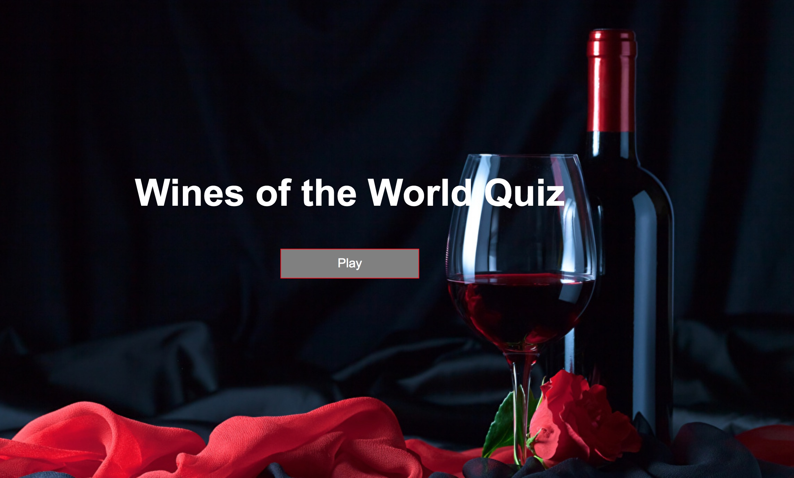

Headline
Hello, my name is Hunter. I’m a passionate fullstack developer, with a great hunger for a new challenge.
A Little About Me!
I am a recent graduate from the Thinkful Fullstack Flex program. I enjoy coding because of the perfect balance between structure and creativity. It allows me to achieve new challenges everyday and think critically about various problems and situations. I love finding new concepts and ways of attacking the problem to achieve maximum readability and functionality. Aside from coding, I love to hike, explore new restaurants, and spend a day wine tasting in Woodinville right outside of Seattle. I pride myself on my work ethic and salesmanship that I have worked on my whole life, serving in top steakhouses around the country. Coding gives me a great sense of achievement and accomplishment and imparts the challenge I have always longed for in a career.
Wines of the World Quiz
Description
This quiz tests your knowledge of the different wines and pairings throughout the world. This is the first app I have ever developed from the ground up and works with HTML, CSS, Javascript, and JQuery. So go ahead, let’s see how your wine knowledge fairs in the world of wine!
